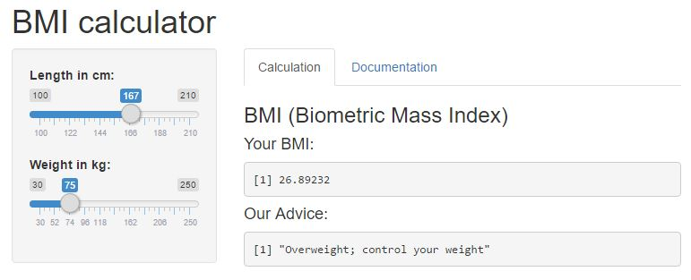
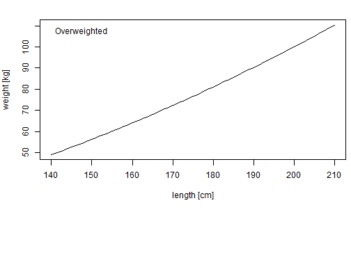

- Explanation of BMI
- The BmiMetric BMI calculator App
- BMI advices
HvdR
Student
Obesity can be a major risk for diabetes, heart disease and death.
The Body mass index (BMI) is the standard metric for determining who is normal-weight, overweight and obese.
BMI is a measure of body fat based on length and weight that applies to adult men and women.
The formula is: \[BMI = \frac{weight[kg]}{(length[m])^2}\]
If your BMI indicates you are overweight, it is time for you to loose weight.
For more information: US National Heart, Lung and Blood Institute
Do you want to determine your BMI and get an usefull advice ?
"BmiMetric" is an easy-to-use BMI calculator APP developed with the Shiny platform
The BMI calculator can be found on https://hridder.shinyapps.io/bmimetric

A BMI Value of more than 25 determines if someone is overweighted. Useful information is a plot of the maximum weight by length.
A quick line plot for the maximum weight by length can be made in R with:
length <- (140:210) # Length in [cm]
weight <- 25 * ((length/100)^2)
plot(length,weight)
